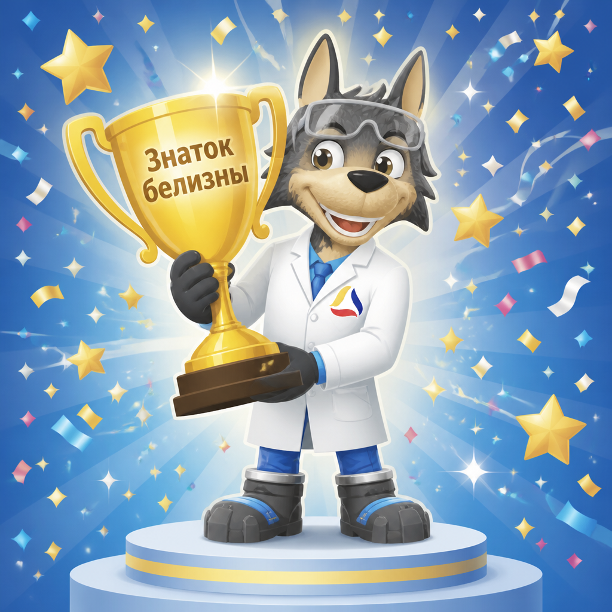

🐺
Правда или миф: тайны белизны
Играем с волком-химиком Панкратом
Привет! Я — Панкрат, тамбовский волк-химик.
Знаешь ли ты, как отбеливали ткани в древности? А чем опасен хлор? Проверь себя! 10 вопросов — и я скажу, кто ты: Мастер белизны или Новичок в мире чистоты!
Как играть:
Прочитай утверждение и реши — правда это или миф.
После каждого ответа я расскажу правильный вариант и объясню, почему так.
Прочитай утверждение и реши — правда это или миф.
После каждого ответа я расскажу правильный вариант и объясню, почему так.
Вопрос 1 из 10
Текст вопроса
🏆 Игра завершена!
Вы ответили правильно на 0 из 10 вопросов.
Ваше звание
Описание звания
